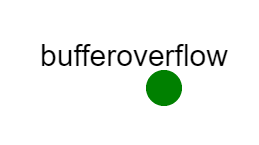

Overview
The purpose of this exercise is to introduce you to the concept of buffer overflow and give you a first-hand opportunity to see them in source code, exploit them, and patch them. After successfully completing this exercise, you will be able to:
- Accurately identify and describe buffer overflows
- Identify buffer overflows in preexisting code, including an example webserver in C
-
Understand how vulnerabilities lead to:
- Crashes
- Remote execution exploits
- Unauthorized access to private data
- Repair simple examples of buffer overflows in the aforementioned code
- Author memos describing in detail your findings and code changes
You should be familiar with the Unix command line, POSIX permissions, and basic programming. The exercise will also use C and HTTP, but at introductory levels.
Required Reading
Buffer Overflows
Buffer overflows are a unique kind of occurrence enabled by poor programming in certain languages (for example C, C++, and assembly code) that allow the use of fixed memory buffers for storing data and do not include automatic bounds checking. A buffer is a bounded region of memory into which data can be stored. Buffer overflows result when a buffer is assigned more data than it can hold. The buffer "overflows" into the next available memory space, overwriting the data. Strictly speaking, this is not necessarily an error. However, it has historically been the cause of many bugs and security flaws because so much commonly used code is written in these languages, including compilers, interpreters, and operating systems. Buffers are different from traditional variables in strongly-typed languages because each genuine type is of a fixed, predetermined size. For example, on most computers an 'int' in C is a 32-bit signed integer. By using the keyword 'int', the programmer has declared to the compiler that this variable and associated memory will never need to exceed 32 bits of storage space, and in fact the compiler ensures that this is not possible. (This is why partly why integers "wrap" when they "overflow" -- the other part is two's complement arithmetic, but that's a lecture for a different class.) Unfortunately, sometimes strong types are inadequate precisely because you don't know exactly how much memory something is going to require. For example, a user entering their birthplace could be from "Orr, Minnesota" (14 bytes), or they could be from "Llanfairpwllgwyngyllgogerychwyrndrobwyll-llantysiliogogogoch, Wales" (67 bytes). You know it's character data, but how many bytes do you need to reserve to store it? Of course, because memory is finite, we are forced to set some upper bound on the size that we hope will be sufficient. This is where buffers come in. A buffer is allocated with a specified amount of space (the upper bound) and a type (usually char for character data) and are accessed via a pointer to the first byte of the buffer. Furthermore, allocated buffers will have some positional relationship in physical memory depending on how the compiler chooses to optimize the code. In our place name example, if we allocated a buffer of 60 bytes for "city" and then allocated a buffer of 20 bytes for "country" it is possible that they will be adjacent to each other (or perhaps some other buffers or variables). Unfortunately, programmers often neglect to make sure that input from the outside world (or even from the program itself) will fit into the declared size of the buffer. Instead, they often think, "There's no way that X will ever be longer than Y bytes!!!" Of course, perhaps X is usually shorter than Y, except when there is an error -- or when someone is intentionally trying to disrupt or compromise your system. In the strictest sense, a "buffer overflow" is when a buffer of size b is assigned data of size c where c > b. Languages like C and C++ in practice will blithely assign the data c to the memory location b, and this means that whatever memory addresses were after b will now be replaced by the overflow of c. If done unintentionally, this will typically cause bizarre data corruption at the very least and very probably segmentation faults if the overflowed memory is read or dereferenced. This can be used to create denial-of-service attacks by crashing applications remotely with bogus input (e.g., the "Ping of Death"). However, with some careful planning, source code inspection and/or experimentation it is often possible to overwrite the function pointer on the stack of the application, in effect controlling the next "step" the program will take after it finishes reading the new input. This can be used to make the program loop back on itself, or to crash the program. Even more insidiously, it is often possible to dynamically rewrite the running program by including new function code in the data payload you use to overflow the buffer and then change the function pointer to point back to the function you just stuffed into memory. The program will finish reading the data, consult the newly assigned function pointer, and jump to the code you just provided. This allows you to remotely execute code with the permissions of the running software. Typical exploit payloads will further compromise the system by creating a new user, changing a privileged password, or performing some other action that makes additional compromise easier. This often leads to a root terminal session on the server, after which point the server must be considered completely compromised. Buffer overflows are an excellent example of why input validation is absolutely critical when writing any software. Input validation is the process of programmatically ensuring that all accepted input fits within the logical constraints of the application. This can be as simple as making sure that a social security number has no alphabetic letters (e.g., a fill-in form), or as complex as parsing the input for syntax (e.g., a software compiler). Ultimately, input validation is a part of the "principle of least privilege." We like to think that our programs can only do what we thought about while we designed them. But in fact, our programs can do (are granted the privilege to do) whatever their code and environment allow. Unvalidated input can often modify the behavior of an application, which directly modifies what the program is given the privilege to do. Thus, good programs always validate their input.
Additional Reading on Buffer Overflows
For more information, including detailed technical explanations, see:
- Smashing the Stack for Fun and Profit, by AlephOne. This is the canonical HOWTO for buffer overflows.
- Buffer Overflow at Wikipedia
- ...or many other online resources about this very popular attack.
Software Tools
This section will describe some tools you may need to complete this exercise.
Running fhttpd
Sometimes, poking and prodding programs makes them die. In particular, your goal in part of this exercise is to cause a process to crash. This means you need to know how to start and stop your server. To start your server, start your experiment on SPHERE, ssh to the host bufferoverflow and cd into /usr/src/fhttpd. If you have made any changes to the source code, recompile the server using:
$ sudo makeThen, start the server using:
$ sudo ./webserver portnumber... where portnumber is some port number that isn't already in use. (I usually use 8080, but it doesn't matter.) The server will start up, and the output will be directed to your terminal, including incoming requests. Please note that the server will be running as root, since it was started using sudo. This is generally a bad idea, but is done here to model the way that it was used at FrobozzCo (see Tasks). You can then open another terminal session on server and run telnet localhost portnumber. Once connected, you can issue HTTP commands from the telnet terminal (see the sections on HTTP and telnet). If the server crashes for any reason, you will know immediately because you will be "kicked out" to your prompt when the server dies. You can then restart it easily using the steps just discussed. If you want to quit your server (without crashing it), press control-c. Sometimes, when a process using the network dies unexpectedly, the socket is left open in the kernel until it times out. If you try to restart on the same port number, it may tell you that the socket is already in use. If that happens, you can either wait for the kernel to free up the socket, or just start the server on a different port. Since crashing and restarting the webserver usually results in a variety of ports being opened and close, I do not recommend using port forwarding for the buffer overflow portion of the lab. Just do everything in the console using 'telnet', 'netcat' (or 'nc'), 'elinks', and so on.
telnet: cleartext remote shell
TELNET (TELe-NETwork) is a cleartext remote terminal protocol. On its face, telnet is very simple; the user issues commands over a TCP socket, and the server replies with the results of those commands and waits for more input. In practice, this is complicated with various network and terminal emulation layers. Still, telnet is one of the simplest and oldest network protocols still in use. Due to its cleartext nature and low level access to the system, telnet is incredibly insecure -- it was common in the past for system administrators to log in as root using telnet on a hub network connection that could be sniffed by any sufficiently prepared attacker. Thanks to the advent of Secure Shell (ssh), active use of telnet servers has died off except for some specialized uses. One place where telnet lives on is debugging character based network services. For example, web pages can be retrieved by telnetting to HTTP servers, and emails can be sent by telnetting to SMTP servers. Telnetting to a suspected open port is still one of the fastest ways to see if a service is available or reachable. While wget is useful for scripts, telnet is useful for interactively probing network services that are based on plain text. In this exercise, we'll use telnet (and/or wget) to explore the vulnerable HTTP server. Here's an example of how to use telnet to access a web page:
$ telnet yahoo.com 80
Trying 66.94.234.13...
Connected to yahoo.com.
Escape character is '^]'.
GET /
...
<html><head>
...[web page data] ...
</body>
</html>
Connection closed by foreign host.The HTTP Protocol
In this exercise you will be attacking a web server. A web server is an application that takes input over TCP port 80, and responds to the client based on the outcome of the request. The language that web servers speak is known as HTTP -- the Hyper Text Tranfer Protocol. If a request is successful, the server will provide the requested information along with a success message as defined in the protocol. If the request fails, the server is supposed to respond with an error message detailing why it failed. When trying to see where a bug or vulnerability is in a server application, it is often important to understand the protocol the server is supposed to understand.
Making simple HTTP requests over telnet is easy. It is a specially-formed request that ends with two returns -- one to end the last line and one to create a blank line. Here's an example:
$ telnet localhost 8080 (or whatever port your server is running on)
Trying 66.94.234.13...
Connected to yahoo.com.
Escape character is '^]'.
GET /
...
<html><head>
...[web page data] ...
</body>
</html>
Connection closed by foreign host.In the above example, the client (using telnet) requested the root document on the server (GET / followed by two "returns").
RFC 1945 defines a version of HTTP, and is a good (although dense) resource for understanding the HTTP protocol. You can also look at the above section on telnet, which provides an example of a very simple web request. If you search online, you should be able to find many other resources describing HTTP.
Our webserver supports a very small number of extended "HTTP 1.1" requests, which can be made like so:
$ telnet localhost 8080 (or whatever port your server is running on)
Trying 66.94.234.13...
Connected to yahoo.com.
Escape character is '^]'.
GET /somefile HTTP/1.1
Special-Request-Goes-Here
...
Connection closed by foreign host.Here, the user specifies "HTTP/1.1" after the URI and presses return once. Then, they can submit additions to their request, followed by two "returns". Those requests are parsed by the server before it returns any matching file.
The web server you will be attacking supports only a very small subset of these extended HTTP requests. One good way of exploring potential attacks is to examine the source code to determine what kinds of requests the server will even attempt to process, and see if any of those code paths involve fixed length buffers and/or lack input validation (e.g., bounds checking).
wget: non-interactive command-line network client
wget is a command-line web client useful for scripting interactions with servers. wget supports several protocols, but is mainly used for interacting with web servers. In its most basic use, the user specifies a URL on the command line, and wget fetches that URL. For example, to download Google's home page, one can simply execute:
$ wget http://www.google.com
--2024-08-21 19:53:30-- http://www.google.com/
Resolving www.google.com (www.google.com)... 142.250.188.228, 2607:f8b0:4007:814::2004
Connecting to www.google.com (www.google.com)|142.250.188.228|:80... connected.
HTTP request sent, awaiting response... 200 OK
Length: unspecified [text/html]
Saving to: ‘index.html.’
index.html [ <=> ] 19.99K --.-KB/s in 0s
2024-08-21 19:53:30 (185 MB/s) - ‘index.html’ saved [20467]netcat (or nc): a network swiss army knife
netcat (often nc on some systems) is a Unix utility for creating and using TCP and UDP sockets. In a very simplified way, netcat is like a telnet client and server without any built in protocol or terminal emulation. Another way of putting it is that netcat is the barebones for creating a TCP or UDP socket and client, with hooks for using standard in and standard out for IO. In this exercise, we will use netcat as a means of sending an attack payload to a vulnerable TCP server. To send a file to the host receiver at port 10000, do something like this:
$ netcat receiver 10000 << attackscript.txtThis gives the data in the file attackscript.txt as input to netcat which directs it to the host receiver at port 10000. See the next section for important notes on file formats.
CRLF vs. LF newlines: line endings and network protocols
This section describes some important information you will need for creating your exploits.
A file is really just a stream of characters. But humans read "lines" of text. How does the computer know where one line ends and another begins? The answer is that at the end of every line of text is an invisible newline character sequence. Unfortunately, there are two common newline character sequences, and most systems expect one or the other for normal text files. In particular, Windows/DOS tend to use CRLF (carriage return followed by line-feed), while Unix uses LF (line-feed) only. Some editors or commands create CRLFs at the end of a line, while others just create LFs. Likewise, some network servers expect CRLF, and others expect just LF (and these differences are not Windows or Linux specific). Handling this is easy if you follow these two steps:
- Figure out what format you need to use for a particular task.
- Figure out what format your editor creates, and learn how to convert it.
For example, Notepad in Windows adds CRLF to the end of each line. However, Wordpad in Windows only uses LF, and can save in either Unix or DOS format. vim on Unix uses LF (Unix-style) line endings by default, but will use CRLF (DOS-style) endings if the file is in DOS mode. You can also force vim to use DOS mode by typing:
:set fileformat=dosThis will use CRLF as the line termination, rather than just LF (the Unix standard). This is important if you are scripting commands for certain protocols, such as HTTP.
Scripting Exploits
The "example payload" files on your experimental node (in /root/submission) are already in DOS mode, so you shouldn't have to do anything to them. However, if you're going to create a new exploit file for this exercise or some other project, you should edit it in DOS mode or otherwise make sure that you are using CRLF as line endings instead of just LF.
diff and patch: see differences and create source patches
In this exercise, you'll be fixing security vulnerabilities in a few simple programs. However, instead of your whole program, we only want the differences between your new, fixed, program, and the original. A file which contains only the changes between two revisions of a program is called a "patch." Fortunately, creating patch files for single-file source programs is easy.
To see the differences between two files on Unix, you use the diff utility:
$ diff -u one.txt two.txtAnother useful tool is called patch. patch takes properly-formatted diff output, and applies the changes to the original file. diff can generate this output with a few options:
$ diff -u oldcode.c newcode.c > fixed.patchThis above options for diff will create a patch with the filenames and all necessary information that the patch program requires. This makes patching as simple as executing:
$ patch oldcode.c -i fixed.patch -o new-patched-file.c... and this will create a patched version of the program that you can test. When submitting a patch file, it is highly recommended that you create the patch and then test it before submitting it to make sure that it works. You will not get any points for code that does not execute or compile in the exercise environment. If you're having permissions problems, consider switching to root by executing sudo su - or change the permissions of the source directory in question.
Introduction
You are the security administrator for FrobozzCo, a large corporation with a great many secrets. You have just come back from a much-needed four week vacation in West Shanbar, only to find that FrobozzCo has been having some serious security issues! In order to do everything you need, you've prepared a test environment on SPHERE with the software installed.
Assignment Instructions
Setup
- If you don't have an account, follow the instructions here.
-
Create an instance of this exercise by following the instructions here, using
bufferoverflowas Lab name. Your topology will look like below:
. - After setting up the lab, access your
bufferoverflownode.
Make sure that you save your work as you go. See the instructions in the submission section of this exercise for information about save and restore scripts. Make sure that you save any changes you make to the sourcecode, your patches, memos, etc. in your home directory so they are not lost when you swap out your experiment.
Tasks
Buffer Overflows -- The Webserver
FrobozzCo has a longstanding tradition of reinventing the wheel whenever possible. As the old saying goes, "Why use something great that someone else made when you can use a mediocre thing you made yourself?" Additionally, the prevailing belief in management is that in-house software is more secure than third-party software since FrobozzCo alone has access to the sourcecode. To that end, when the Great Web Revolution hit and statistics relating to frobnick production were needed by remote facilities, the higher-ups at FrobozzCo insisted that their engineers write a webserver daemon, and it has been dutifully (if unspectacularly) serving web pages for many years. They also requested that it run as root, rather than have to both with setting permissions. Unfortunately, it is clear that someone has "rooted" (i.e., gained unauthorized superuser access to) the server; a number of root access files were copied out over the Internet and then the server started sending tons of spam. Fortunately, no data was lost, but the intruder had full control of the server and it is still unknown how they got in. You are convinced there is an exploitable buffer overflow bug in the web server software, but your boss, William H. Flathead III laughed off your suspicions saying, "I wrote the web server software -- and I'd never have made that mistake!" Nevertheless, he suggests you investigate the possibility of a buffer overflow, "just to be sure." He asks you to produce a one page memo with an attached working demo that targets a specific buffer overflow (should one exist) causing the server to crash. This should be an intentionally exploitable hole in the code and not simply a robustness issue. If you find a vulnerability, your boss wants a patch to fix it. Finally, he wants to know how to clean up this mess -- how severe is this specific compromise? How can we restore the system to a safe state?
Buffer Overflow Tasks
- Load your experiment in SPHERE.
- Find the webserver code, located in
/usr/src/fhttpd. - Compile and run the code, using the instructions in the lab manual section on compiling and running the webserver
- Copy webserver.c to webserver.orig.c so that you can make a patch against the original.
- Find the buffer overflow in the
fhttpdwebserver code. - Exploit the overflow, causing the software to crash.
- Please note: you may be able to crash the software in other ways (e.g., a null pointer dereference) -- we are only specifically interested in a buffer overflow caused by input that is not properly bound-checked.
- See the section on the HTTP protocol, where you can learn about what the HTTP API looks like and how to send commands to web servers manually.
- Create an your exploit program, using the skeleton exploit we provided in
/root/submission/exploit.shand/root/submission/payload. Edit/root/submission/payloadto include your attack data. - Fix the buffer overflow bug in the fhttpd sourcecode and create a patch against the original using the information below (and in the lab manual section on diff and patch).
-
Once you have fixed the flaw (and assuming you have webserver.orig.c), create a patch like so:
- cd into the source code directory
- execute:
diff -Naur webserver.orig.c webserver.c > webserver.patch
-
Write a ~1 page memo:
- Describe the security flaw you found, how you fixed it, and how your demo exploit works. (The memo itself should quote as little source code as possible; for longer sections, refer to filenames and line numbers in the original or your attached patch.)
- Considering fhttpd alone, include in your memo:
- An evaluation of the seriousness of the breach
- A recovery plan for the server. (Is it enough to fix the flaw? Why or why not?)
- Any other observations or thoughts you might have.
- Put the following files into in
/root/submission: - your memo
- your working demo with instructions
- your patch
What can go wrong
There are no known issues.
Extra Credit
Remote Execution
The assigned task for this exercise is to simply crash fhttpd with an attack payload. However, it is possible to inject code via the payload and take over the application. Since fhttpd runs with root privileges, you can execute anything on the system if you manage to take over the program. For extra credit, do #1 and/or #2 below, and then #3:
- Create and successfully execute a remote execution exploit using the vulnerability in
fhttpd. This could be as simple as writing a file to the system. - 0wn the box: Create a remote shell you can send commands to, add a login user with root access, or some other reliable remote access facility.
- Draft a short writeup describing the steps you took to create the exploit and what you learned in the process.
Submission Instructions
For this exercise, you will submit a tarball containing your patch, memo, and exploit code. Use the script submit.sh in /root on the server host for creating and restoring those tarballs.
submit.sh and restore.sh
submit.sh will back up:
- the source code directory
/usr/src/fhttpd/ -
everything in
/root/submission, which should include:exploit.shpayload- your memo
- patch
restore.sh will restore those files to their original locations, automatically overwriting whatever is there. Submit your tarball to your instructor.